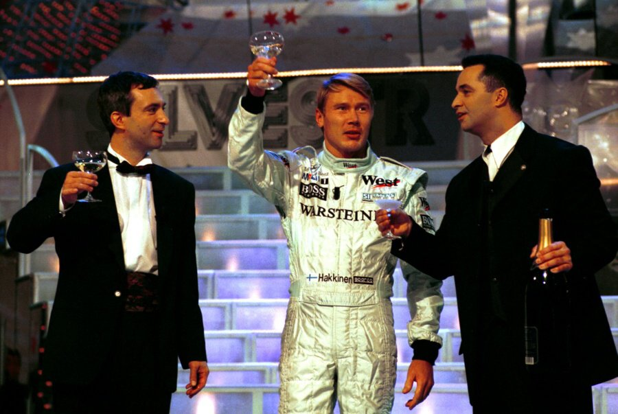

Finsko je zemí severní evropy. Finsku se někdy také říká ,,země ticha, tisíce jezer a ostrovů“, to jest kvůli obrovskému počtu jezer
které se ve Finsku nacházejí, leží tam přes 160 tisíc jezer. Když jsem do vyhledávače napsal kolik měsícu ve Finsku sněží,
zjistil jsem že ve Finsku mají sníh ohromných 7 měsíců. Jelikož leží na severu, můžeme zahlédnout i polární záři.
Obyvatelstvo
Ve Finsku žije přibližně 5.5 milionů lidí. Většina obyvatel žije v jižní části Finska. V hlavním městě žije
přes 600 tisíc lidí. Typický Fin je klidný a upřímný, to je asi jedna z věcí kvůli které je Finsko nejšťastnější zemí na světě.
Kultura
Kulturní život a oslavy jsou většinou spojeny s místními svátky. Mezi nejdůležitější, který se slaví nejvíce, patří letní slunovrat (obdobné jako v ČR pálení čarodějnic). Dalším důležitým svátkem je pro Finy Den nezávislosti. Neméně důležitým svátkem jsou taktéž Vánoce. Stará finská kultura vychází z původního finského pohanství. Vánoční dárky dětem nosí Joulupukki, finská obdoba Ježíška.
Další neméně důležitou činností Finů je saunování. Sauna zde náleží ke standardnímu vybavení domácnosti a je velkou ctí přijmout pozvání od místních ke společným chvílím v sauně. Další
oblíbenou aktivitou je známé pití vodky.
Jídlo
Finská kuchyně má mnoho společných prvků s kuchyněmi zemí, k nimž Finsko nějakou dobu patřilo, tedy s kuchyněmi Švédska a Ruska,
má ale i řadu vlastních specifik. K základním potravinám patří maso a ryby, brambory, zelenina, houby.
Z masa se nejvíc zkonzumuje vepřového, hovězího, kuřecího a jehněčího. Zhruba třetina masa se sní ve formě klobás (makkara),
jejichž základem je většinou vepřové maso. Opékání makkary na ohni v přírodě patří k národním vášním.
Známé Osobnosti

Mezi nejznámější osobnosti z Finska, za mě určitě patří jejich jezdci Formule 1. Nejznámějším z nich bude asi Mika Häkkinen
který byl rivalem nejznámějšího jezdce světa Michaela Schumachera. Zároveň vyhrál dvakrát šampionský titul ve formulích. Jednou ze zajímavostí, kterou jsem dohledal bylo to, že Mika byl
i v Silvestr ’99 aneb Paráda z Kavčích hor pro ty, kteří si tuto událost pamatují tak se tam vyskytl na konci celého pořadu.